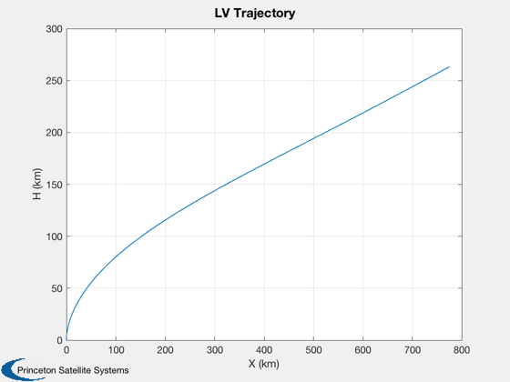
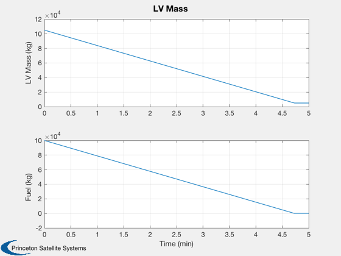
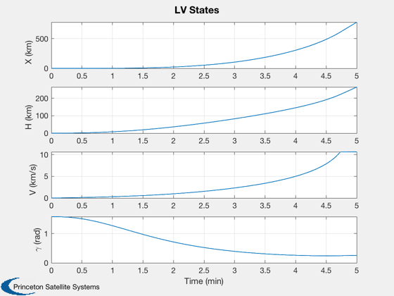

Launch vehicle simulation for single stage to orbit (SSTO) vertical launch
Simulates a gravity turn trajectory in 2D. The goal is to get the vehicle moving horizontally at orbital velocity. This demo performs a single simulation. See also SolveGravityTurn, which performs a numerical search for the desired initial flight path angle.
Uses RHSLaunchVehicle2D which has a 'flat' earth. The simulation can handle any number of sequential stages.
You vary the pitchover angle to get different trajectories. The number in the script gives the vehicle a horizontal trajectory (that begins to drop due to drag) at 68 km. The trajectory is very sensitive to gammaPitchover.
------------------------------------------------------------------------ See also RHSLaunchVehicle2D, Plot2D, TimeLabl, RK4, MSThrustModel ------------------------------------------------------------------------
Contents
%-------------------------------------------------------------------------- % Copyright (c) 2007 Princeton Satellite Systems, Inc. % All Rights Reserved. %--------------------------------------------------------------------------
Time and Control
%------------------ nSim = 300; dT = 1; % sec gammaPitchover = 0.0035; % rad kPitch = 10; % steps
Vehicle model and RHS data
mSS = [ 5000]; % Dry mass of each stage mSP = [100000]; % Propellant mass of each stage thrust = [1400]; % Thrust of each stage (kN) Isp = [405]; % Specific impulse (s) lv = CreateRocketModel( mSS, mSP, thrust, Isp, 'demo', 's' ); d = LaunchRHSData( 2, lv ); d.cDA = 0.35*2; % Drag coefficient of each stage times area %----------------------------------------- % State: [x h v gamma massFuel] % x Downrange distance % h Altitude % v Velocity % gamma Flight path angle %----------------------------------------- x = [0; 0; 0; pi/2; lv.mSP']; % Store plot points in x %----------------------- x = [x zeros(length(x),nSim)];
Run the sim
%------------ for k = 1:nSim % Initiate pitchover %------------------- if( k == kPitch ) x(4,k) = pi/2 - gammaPitchover; end % Propagate one step %------------------- x(:,k+1) = RK4( @RHSLaunchVehicle2D, x(:,k), dT, 0, d ); if( x(2,k+1) <= 0 ) break; end end nSim = k; x = x(:,1:(nSim+1));
Generate plots
% Plot the trajectory %-------------------- Plot2D( x(1,:), x(2,:), 'X (km)', 'H (km)', 'LV Trajectory'); % Create the time array and label %-------------------------------- [t, tL] = TimeLabl( (0:nSim)*dT ); % Compute the mass %----------------- m = x(5,:) + lv.mSS(1); yL = {'LV Mass (kg)' 'Fuel (kg)' }; % Plot the mass %-------------- Plot2D( t, [m;x(5,:)], tL, yL, 'LV Mass'); % Plot the states %---------------- yL = {'X (km)' 'H (km)' 'V (km/s)' '\gamma (rad)'}; Plot2D( t, x(1:4,:), tL, yL, 'LV States'); %-------------------------------------- % PSS internal file version information %--------------------------------------  